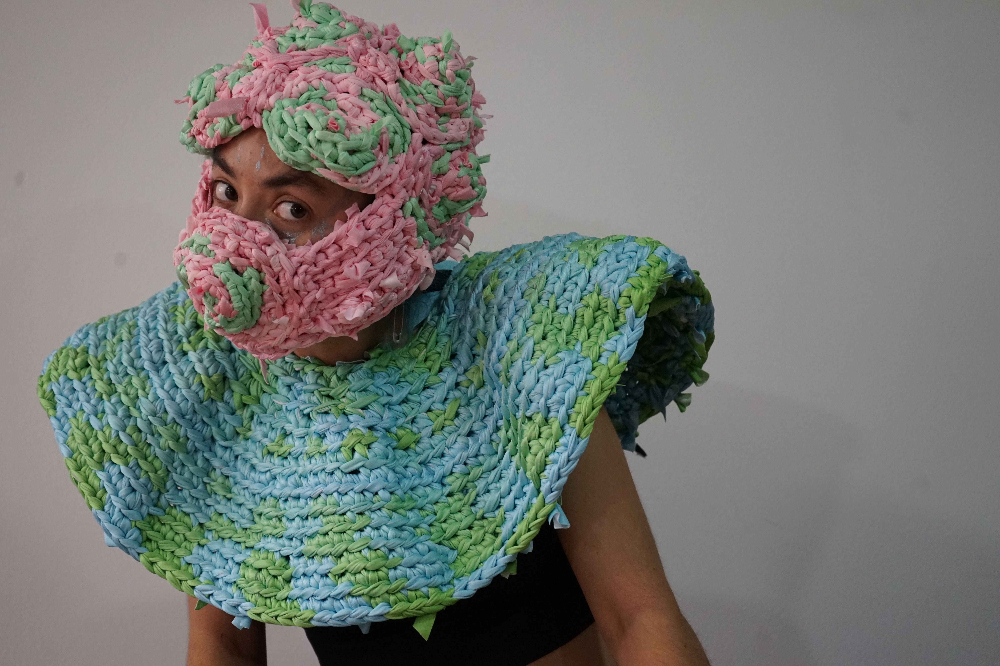
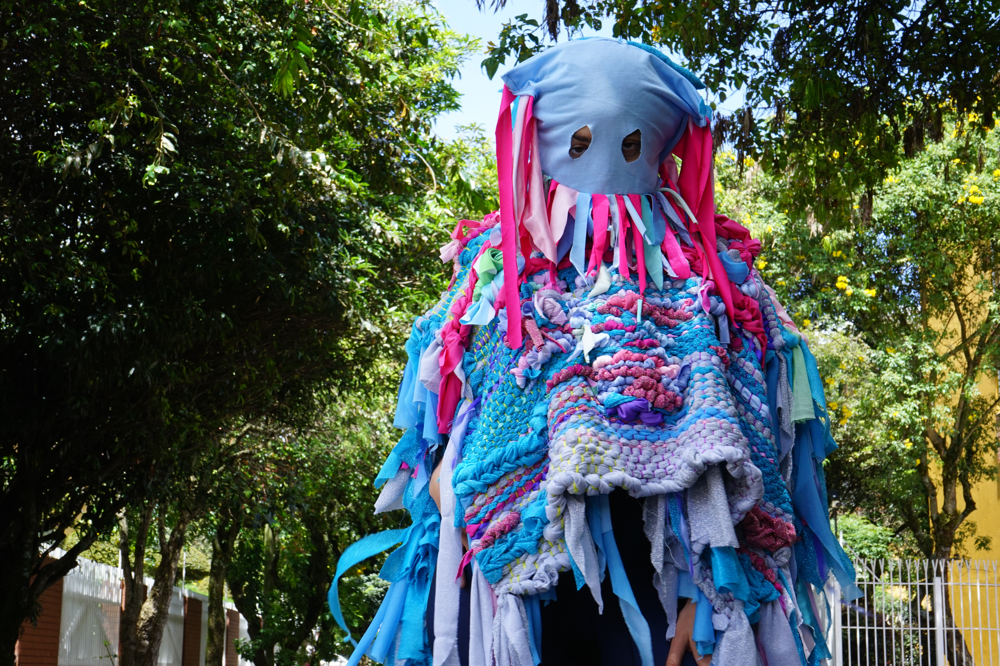
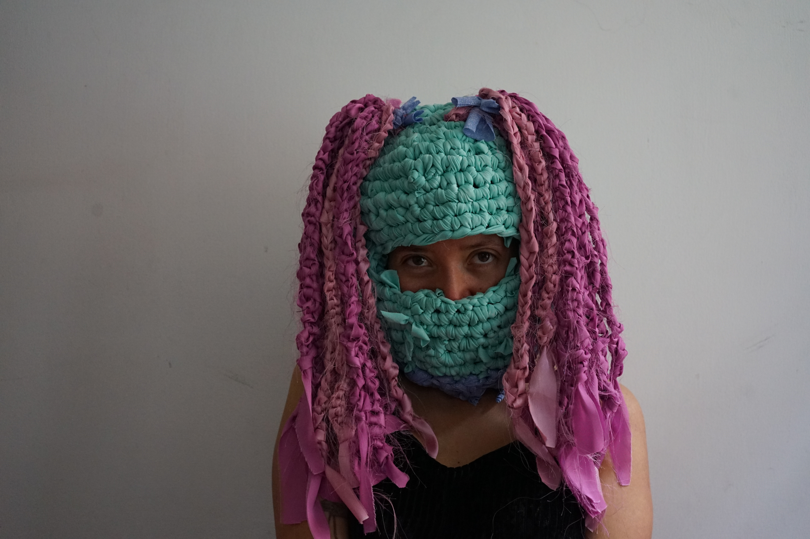
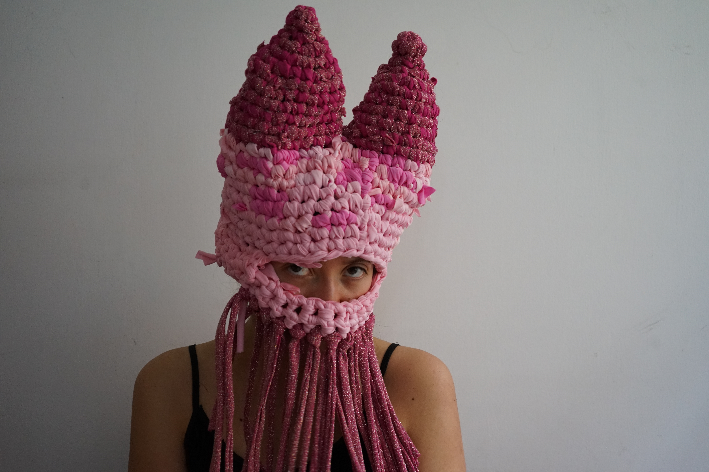
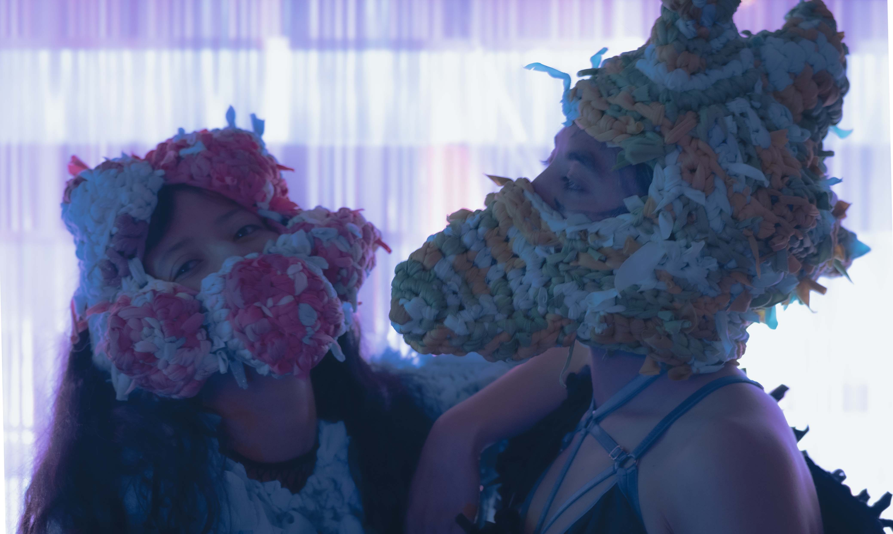
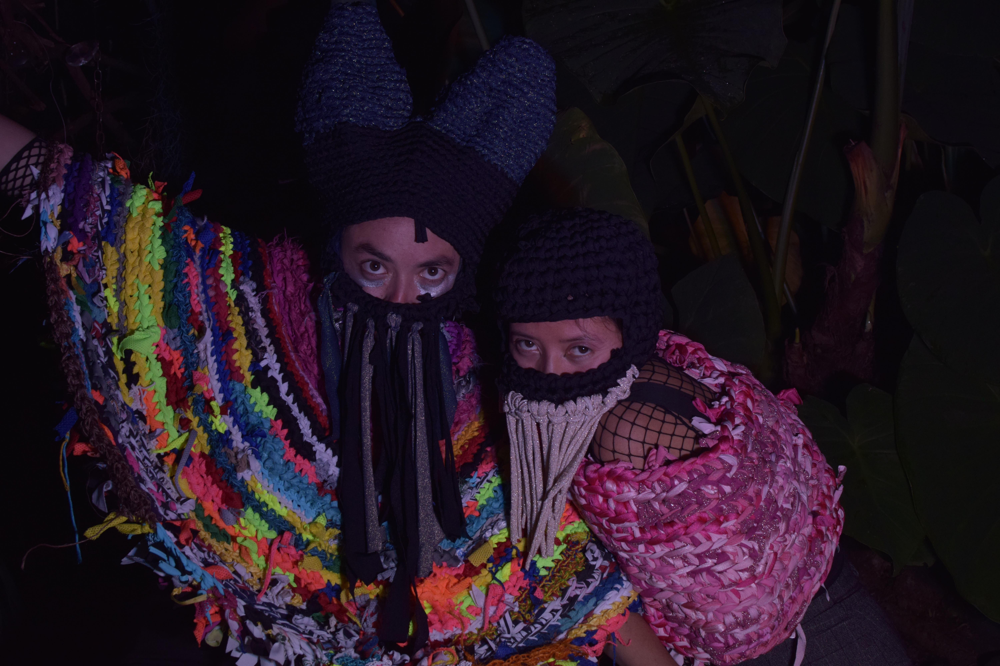

TEXTILE ART
Interactive textile installation and masks (you can click on the images to see them in fullscreen)
What remains?
This is a sound and textile installation that invites the audience to interact using their touch, asking about the matter of time perception and space.
A giant loom was woven from the inside out. Based on a monotonous pattern, the space was filled with mechanical repetitions. The threads still carry the memory of the weaver, a memory that contains us all, travelling through musical fragments of women in history and questioning the things that remain visible in the dominant narratives.
Concept and realization: Sule Suarez and Gorka Egino
Watch a video of the sound textile installation







Selection of mask by Vestidas y Alborotadas
These monstrous beings made of discarded textile scraps from factories, hand-woven, are part of the stage setup by the collective "Vestidas y Alborotadas." These creatures leap from an open source interface to create an industrial and experimental sound experience using chaotic sounds. Additionally, they generate images where pixels burst using the open software tools Hydra and sound with SuperCollider.
Elaborated by the collective "Vestidas y Alborotadas" (Sule Suarez and Juanita Prieto)
See portfolio of Vestidas y Alborotadas collective